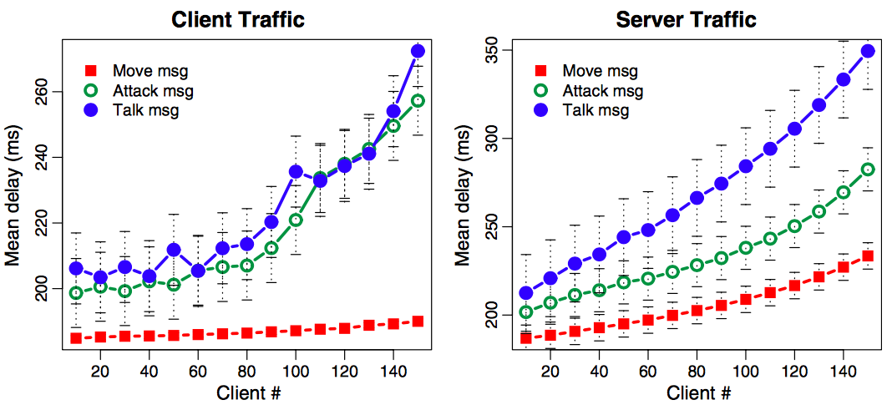

Since JakeMUD is a lightweight MMORPG MUD, the data is even fewer than MMORPGs in gaming industry. Thus, we have to scale up our result to be visible. Our recommended solution indeed reduce some bandwidth when some characters AFK. But the differences are relatively small.

TCP/UDP in MMORPGs is all about trade-off:
Between - Infrastructure requirement vs. TCP’s reliability
Between - Bandwidth vs. Speed
Between - UDP unreliability vs. TCP retransmission
But what's the future? Feel free to send us email about your thoughts!
1. Disable Nagle’s Algorithm
2. Reduce server bandwidth on previous project JakeMUD (TCP-based MUD)
- Movement detection
- Send out a resume sequence number to client
- Multiple streaming channels to process messages - Move, Attack, Talk
- Move, Attack switch to UDP, Talk stick with TCP
- Switch back to TCP with resume number from client
We will think more about firewall traversal in our final report. Also, we will dig into the measurement for TCP/UDP comparison, our recommended solution in JakeMUD.
Presentation In ECS from 11:00 am - 12:00 pm!
Retransmission timeout - ping increases significantly if packet dropped
Big header - we have Nagle's algorithm! But you want bandwidth or less latency?
Internet Speed
One of the major reason that game developer use TCP instead of UDP is that the internet speed nowadays become faster and affordable. The internet speed is fast enough to minimize TCP packet dropping. Therefore, the game developers tend to use TCP as their transport protocol as it is more reliable than UDP.
Congestion Control
The second reason of choosing TCP over UDP is TCP provide congestion control. What we found one of the characteristic of MMORPG network traffic is the actual size of game packet payload is small compared to other online games. You may ask: since TCP may consume more bandwidth than UDP, why still sending small packet with TCP?
The answer is Nagle’s Algorithm. It combines few more small packets to send to save bandwidth. UDP header doesn’t have window size, if the whole game uses UDP, it may occupy your whole bandwidth. So sometimes we feel our game is slow, it most likely nothing to do with network speed, just because the application buffer limits the traffic!
Cheat Detection
In the old days, cheat detection relied on server side has evolved to client side now. The day when internet speed was relatively slow, sometimes game server need to take the responsibility of cheat detection. For example, to prevent cheating software to clear all fog of war, server need to send back confirmation of explored fog of war, UDP do the job better on this. If TCP would be applied to respond explored fog, players can notice the inconsistency because of TCP’s ACK delay. But today, most real-time cheating detection can be done locally by the software itself, the need of relying UDP on cheat detection has gone
UDP is more efficient with smaller packet size. But we have three main reasons to use TCP.
They are - Internet speed, Congestion control, and Anti-cheat software!
We will choose the following three MMORPGs as our study subject since they are more typical.
EverQuest (1999) - UDP
World of Warcraft (2004) - TCP
Blade and Soul (2012) - TCP
We will show you our three main reasons choosing TCP over UDP in MMORPG, and propose a possible solution to improve some functions.
Our paper will focus on the trade-off of using TCP/UDP in MMORPG, what the reasons behind this are, and we will propose a possible hybrid solution.
We haven't started this step yet. But once UDP is implemented, we will analyze the packet trace. A survey from players might be conducted.
We are tying to modify JakeMUD to transmit UDP (except talk messages). And see how well the performance is in term of reliability, consistency, and latency.
We will start to test JakeMUD's TCP traffic divided into three types of messages - move, attack, and talk.
JakeMUD is a lightweight multiplayers game, and it shares the characteristic of allowing multiple players to connect to the service, and provide a game experience wherein players type and send commands which allow their player character to interact with the game environment. Both user input and the game's responses are presented in a textual format describing the action, or the action's results. JakeMUD applies a structured, centralized game server connected on an overlay network via calling port number. JakeMUD mainly uses TCP as its transport protocol which is different from main stream MUD games since JakeMUD doesn't emphasize on real-time in-game consistency.
During our study, CS (Counter Strick) and many other FPS games, RTS games are using UDP since it requires non-stop updating the status and location of a player. Yet, in recent years, game industry has started to combine MMORPG to FPS or MMORPG to RTS. LOL is an example combining MMORPG and RTS.
So we choose GTA 5 ONLINE to study what transport protocol that FPS-MMORPG would use nowadays. Our guess is pure TCP. Let's find out!
To summaried what we have found so far, almost all MMORPG games are now using TCP! Yet not all game packets need the function and characteristics of TCP. Move messages don't require reliability of TCP. Especially when a player is detected AFK (away-from-keyboard), UDP could save the network bandwidth. Also, we guess move messages don't need to be ordered since players move simultaneously don't affect each other most likely. Attack messages may require reliability depends on the drop rate of game packets. Only talk messages need reliability as well as be ordered strictly which requires TCP no doubt.
What we found is the packet generation rate of MMORPG is pretty low compared to FPS and RTS games. This is a reason why choosing TCP over UDP since there are fewer data to transmit. Instead, reliability is much more important in this sense.
Diablo II, WOW, EverQuest
Fantasy Westward Journey, Blade And Soul, LOL
EverQuest is one of the MMORPG still using UDP. EverQuest is a 3D fantasy-themed massively multiplayer online role-playing game (MMORPG) released on March 16, 1999. It was the second commercially viable MMORPG to be released, after Ultima Online, and the first commercially successful MMORPG to employ a three-dimensional game engine. Since this is the first generation 3D MMORPG developed released in 1999, why could a UDP game works in an era when network was relatively slow? Any trade-off chossing UDP to transmit in 1999?
As we also suspect the reason why MMORPG games use TCP more than anytime ever, is because network infrastructure has been improving, does it mean classic RPG don't use TCP? We will test one RPG game with multiplayer festure and a MMORPG game.
We choose Diablo II as our RPG sample and Ever Quest as our MMORPG sample. Diablo II is an action role-playing hack and slash video game developed by Blizzard North and published by Blizzard Entertainment in 2000.
Back to a real MMORPG game. We are going to look into World of Warcraft (WoW). WoW is a massively multiplayer online role-playing game (MMORPG) released in 2004 by Blizzard Entertainment.
We know it mainly uses TCP. Interestingly, when we play WoW during our packet capturing, we found that characters can move and stand on a same spot rather than players can box out each other in LOL. We suspect that makes players don't feel the in-game delay casued by TCP since the server doesn't need to predict players' potential paths, which is impossible without any delay.
League of Legends (abbreviated LoL) is a multiplayer online battle arena video game developed and published by Riot Games for Microsoft Windows and macOS. So technically speaking, it is a 3D, third-person multiplayer online battle arena (MOBA) game rather than a MMORPG. Only a small amount of players in each room comparied to MMORPG games.
So why would we bother to investgate LOL? If we categorize all game packets into move, attack, and talk, LOL is mainly consisted with move and attack. We want to see how much traffic will move and attack create. And more IMPORTANTLY, if it use TCP to move, how does the game predict one player boxes out another without delay. Or, is it inevitable without delay?
Blade And Soul (블레이드 앤 소울) is a Korean fantasy martial-arts MMORPG game developed by NCSOFT (Team Bloodlust). On September 13, 2012, NCSOFT announced that Blade And Soul would release in Western territories, which eventually happened on January 19, 2016.
4.8 hours traffic was recorded for our research.
Fantasy Westward Journey (Mèng Huàn Xī Yóu) is a MMORPG developed and run by NetEase. It was released for the Microsoft Windows platform in December 2001. The game is the most popular online game in China as of May 2007 by peak concurrent users (PCU), with a peak count of 1.5 million.
We have captured the traffic playing this game. Since it is a turn-based MMORPG game, we hope it uses UDP for main trasmission. The result will be analyzed soon.
Midterm presentation prepare and due
Populated Project Proposal
Update information onto Group website. Discussion on Project Proposal improvement
Group meeting discuss on the research and gather information. And look for appropriate simulation tool
Initial website layout ready
Assigned two articles for EACH group member to read over the reading break
Group meeting discuss on received feedback, and Group meeting discuss on Website layout
Final editing for Project Proposal
Initial draft for Project Proposal - discuss about transport layer based on different gaming server architectures
Group decided to focus on TCP/UDP in gaming industry
Group individual research for possible topic